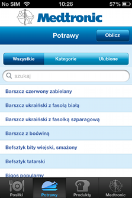
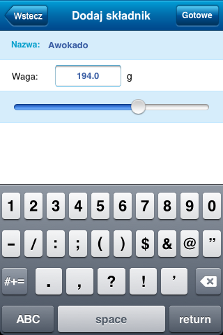
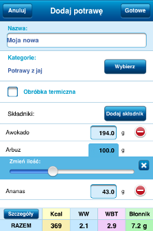
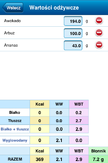
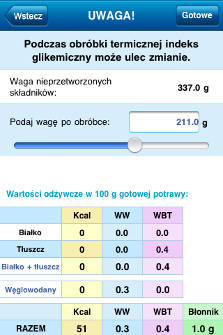
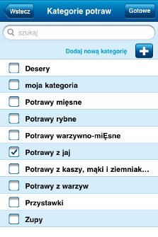

Aby dodać potrawę do listy potraw, należy wejść w zakładkę Potrawy i dotknąć przycisk Oblicz u góry strony.

Składniki potrawy można dodać po kliknięciu na przycisk Dodaj składnik. Po wybraniu jednego z produktów należy wpisać jego wagę (lub użyć suwaka) i kliknąć na przycisk Gotowe.

Lista składników z możliwością zmiany ich wagi (po kliknięciu na wagę składnika pojawia się suwak) i podliczonymi wartościami odżywczymi jest do wglądu w widoku formularza. Czerwony przycisk po prawej stronie składnika pozwala na usunięcie go z listy.

Kliknięcie na przycisk Szczegóły pozwala na podejrzenie dokładnych wyliczeń wartości odżywczych dodawanej potrawy.

Jeśli potrawa poddawana jest obróbce termicznej należy zaznaczyć kwadracik Obróbka termiczna. Wówczas po kliknięciu na przycisk Gotowe, a przed dodaniem potrawy do bazy, użytkownik proszony jest o podanie wagi potrawy po obróbce termicznej i wyliczana jest nowa ilość wymienników w 100 g potrawy po obróbce termicznej.

Aplikacja pokaże formularz do wypełnienia, jak na zdjęciu poniżej. W formularzu należy uzupełnić nazwę potrawy, wybrać jedną z kategorii oraz składniki potrawy.
Lista kategorii pokaże się po dotnięciu przycisku Wybierz. Na liście należy zaznaczyć jedną z kategorii i kliknąć na przycisk Gotowe w prawym górnym rogu.
